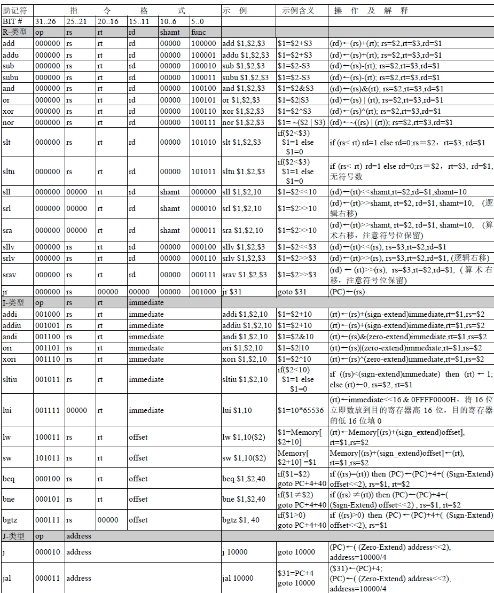

指令详解
本实验一共要实现 31 条与 MIPS 兼容的指令，其中R型17条，I型12条，J型两条。下面对每条指令的格式、功能等给出详细解释，其中用到一些符号约定如下，另外，赋值算式右边的 PC 中存放的是当前指令 的地址。
- rs, rt, rd：表示 32 位通用寄存器号（rs 是源操作数，rt 为源/目的操作数，rd 为目的操作数）
- shamt： 表示 5 位移位位数
- immediate: 表示 16 位立即数
- offset: 表示 16 位偏移量
- address: 表示 26 位地址
R-型指令
1 add
指令名：加法指令
汇编格式：add rd, rs, rt
汇编举例：add $4, $2, $3
功能描述：rd ← rs + rt; PC ← NPC (PC + 4)。 32 位整数加法，源操作数分别在 rs, rt 两个通用寄存器中，结果放在 rd 寄存器。由
于本设计无溢出检测，因此该指令功能同 ADDU。
2 addu
指令名: 无符号数加法指令
汇编格式：addu rd, rs, rt
汇编举例：addu $4, $2, $3
功能描述：rd ← rs + rt; PC ← NPC (PC + 4)。 32 位无符号整数加法，源操作数分别在 rs, rt 两个通用寄存器中，结果放在 rd 寄存器。
3 sub
指令名：减法指令
汇编格式：sub rd, rs, rt
汇编举例：sub $4, $2, $3
功能描述：rd ← rs - rt; PC ← NPC (PC + 4)。 32 位整数减法，源操作数分别在 rs, rt 两个通用寄存器中，结果放在 rd 寄存器。
4 subu
指令名：无符号减法指令
汇编格式：subu rd, rs, rt
汇编举例：subu $4, $2, $3
功能描述：rd ← rs - rt; PC ← NPC (PC + 4)。 32 位无符号整数减法，源操作数分别在 rs, rt 两个通用寄存器中，结果放在 rd 寄存器。
5 and
指令名： 逻辑与
汇编格式：and rd, rs, rt
汇编举例：and $4, $2, $3
功能描述：rd ← rs and rt; PC ← NPC (PC + 4)。 32 位数按位逻辑与，源操作数分别在 rs, rt 中，结果放在 rd 寄存器。
6 or
指令名： 逻辑或
汇编格式：or rd, rs, rt
汇编举例：or $4, $2, $3
功能描述：rd ← rs or rt; PC ← NPC (PC + 4)。 32 位数按位逻辑或，源操作数分别在 rs, rt 中，结果放在 rd 寄存器。
7 xor
指令名： 逻辑异或
汇编格式：xor rd, rs, rt
汇编举例：xor $4, $2, $3
功能描述：rd ← rs xor rt; PC ← NPC (PC + 4)。 32 位数按位逻辑异或，源操作数分别在 rs, rt 中，结果放在 rd 寄存器。
8 nor
指令名： 逻辑或非
汇编格式：nor rd, rs, rt
汇编举例：nor $4, $2, $3
功能描述：rd ← rs nor rt; PC ← NPC (PC + 4)。 32 位数按位逻辑或非，源操作数分别在 rs, rt 中，结果放在 rd 寄存器。
9 slt
指令名: 小于则设置指令
汇编格式：slt rd, rs, rt
汇编举例：slt $4, $2, $3
功能描述： if ((rs)<(rt)) then (rd)←1; else (rd)←0; PC ← NPC (PC + 4)。如果 rs 的值小于 rt 值，则设置 rd 为 1，否则 rd 为 0。
10 sltu
指令名: 无符号小于则设置指令
汇编格式：sltu rd, rs, rt
汇编举例：sltu $4, $2, $3
功能描述： if ((rs)<(rt)) then (rd)←1; else (rd)←0; PC ← NPC (PC + 4)。无符号数小于判断，如果 rs 的值小于 rt 值，则设置 rd 为 1，否则 rd 为 0。
11 sll
指令名: 逻辑左移
汇编格式：sll rd, rt, shamt
汇编举例：sll $4, $2, 10
功能描述： (rd)←(rt)<<shamt; PC ← NPC (PC + 4)。逻辑左移，将 rt 寄存器中的 32 位数逻辑左移后赋给 rd，低位用 0 填充，移位的位数是 shamt。
12 srl
指令名: 逻辑右移
汇编格式：srl rd, rt, shamt
汇编举例：srl $4, $2, 10
功能描述： (rd)←(rt)>>shamt; PC ← NPC (PC + 4)。逻辑右移，将 rt 寄存器中的 32 位数逻辑右移后赋给 rd，移位的位数是 shamt。80000000H 逻
辑右移 1 位的结果是 40000000H。
13 sra
指令名: 算术右移
汇编格式：sra rd, rt, shamt
汇编举例：sra $4, $2, 10
功能描述： (rd)←(rt)>>shamt; PC ← NPC (PC + 4)。算术右移，将 rt 寄存器中的 32 位数算术右移后赋给 rd，移位的位数是 shamt。算术右移时，
符号位不仅要参与移位，还要保留，如 80000000H 算术右移 1 位的结果是 0C0000000H。
14 sllv
指令名: 按寄存器值逻辑左移指令
汇编格式：sllv rd, rt, rs
汇编举例：sllv $4, $2, $3
功能描述： (rd)←(rt)<<(rs); PC ← NPC (PC + 4)。按寄存器值逻辑左移指令，将 rt 寄存器中的 32 位数逻辑左移后赋给 rd，低位用 0 填充，移位的位数在 rs 寄存
器中。
15 srlv
指令名: 按寄存器值逻辑右移指令
汇编格式：srlv rd, rt, rs
汇编举例：srlv $4, $2, $3
功能描述： (rd)←(rt)>>(rs); PC ← NPC (PC + 4)。按寄存器值逻辑右移指令，将 rt 寄存器中的 32 位数逻辑右移后赋给 rd，移位的位数在 rs 寄存器中。
16 srav
指令名: 按寄存器值算术右移指令
汇编格式：srav rd, rt, rs
汇编举例：srav $4, $2, $3
功能描述： (rd)←(rt)>>(rs); PC ← NPC (PC + 4)。按寄存器值算术右移指令，将 rt 寄存器中的 32 位数算术右移后赋给 rd，移位的位数在 rs 寄存器中。算术右移
时，符号位不仅要参与移位，还要保留。
17 jr
指令名: 按寄存器内容转移指令
汇编格式：JR rs
汇编举例：JR $31
功能描述：(PC)←(rs); PC ← NPC (PC + 4)。将 rs 寄存器的内容当地址，赋给 PC，从而完成转移，通常可做过程返回语句。实际系统中只用了低 16 位地址线。
I-型指令
18 addi
指令名：有符号立即数加法指令
汇编格式：ADDI rt, rs, immediate
汇编举例：ADDI $4, $2, -100
功能描述：(rt)←(rs) + (Sign-Extend)immediate; PC ← NPC (PC + 4)。首先将 16 位有符号立即数扩展到 32 位，然后加上 rs 中的数，结果给 rt 寄存器。
如果结果溢出会产生内部异常中断，本设计不支持异常处理。
19 addiu
指令名：无符号立即数加法指令
汇编格式：ADDIU rt, rs, immediate
汇编举例：ADDIU $4, $2, -100
功能描述：(rt)←(rs) + (Sign-Extend)immediate; PC ← NPC (PC + 4)。首先将 16 位有符号立即数扩展到 32 位，然后加上 rs 中的数，结果给 rt 寄存器。
与 ADDI 的不同是不会因溢出而产生内部异常中断，本设计未实现内部异常处理，因此次指令与 ADDI 相同。
20 andi
指令名：立即数逻辑与指令
汇编格式：ANDI rt, rs, immediate
汇编举例：ADDI $4, $2, 1
功能描述：(rt)←(rs) AND (Zero-Extend)immediate; PC ← NPC (PC + 4)。首先将 16 位立即数零扩展到 32 位，然后同 rs 中的数按位逻辑与，结果给 rt 寄存
器。
21 ori
指令名：立即数逻辑或指令
汇编格式：ORI rt, rs, immediate
汇编举例：ORI $4, $2, 5
功能描述：(rt)←(rs) ORI (Zero-Extend)immediate; PC ← NPC (PC + 4)。首先将 16 位立即数零扩展到 32 位，然后同 rs 中的数按位逻辑或，结果给 rt 寄存
器。
22 xori
指令名：立即数逻辑异或指令
汇编格式：XORI rt, rs, immediate
汇编举例：XORI $4, $2, 5
功能描述：(rt)←(rs) XORI (Zero-Extend)immediate; PC ← NPC (PC + 4)。首先将 16 位立即数零扩展到 32 位，然后同 rs 中的数按位逻辑异或，结果给 rt 寄
存器。
23 sltiu
指令名：小于无符号立即数则设置指令
汇编格式：SLTIU rt, rs, immediate
汇编举例：SLTIU $3, $2, 10
功能描述：if ((rs)<(sign_extend)immediate) then (rt)←1; else (rt)←0; PC ← NPC (PC + 4)。如果 rs 的值小于立即数 immediate 值（进行的是符号扩展），则设置 rt 为 1，否则 rt 为 0。
24 lui
指令名：立即数赋值指令
汇编格式：LUI rt, immediate
汇编举例：LUI $2, 10
功能描述：：(rt)←immediate<<16 & 0FFFF0000H 即(rt)←immediate×65536; PC ← NPC (PC + 4)。首先 16 位立即数赋给 rt 寄存器的高 16 位，低 16 位用 0 填充。也就是将 16 位立
即数乘以 65536 后赋值给 rt 寄存器。
25 lw
指令名：存储器读（字操作）
汇编格式：LW rt, offset(rs)
汇编举例：LW $3, 10($2) 或 LW $3, buff($2)
功能描述：(rt)←Memory[(rs)+(sign_extend)offset]; PC ← NPC (PC + 4)。以 rs 寄存器的内容为基地址，offset 通过符号扩展后形成 32 位的偏移，将基地址
加上偏移形成一个 32 位的地址，以此地址从 RAM 中读出一个字（4 字节）赋给 rt 寄存器。本系统中只使用了低 16 位地址，汇编中，offset 可以是变量名。
26 sw
指令名：存储器写（字操作）
汇编格式：SW rt, offset(rs)
汇编举例：SW $3, 10($2)
功能描述：Memory[(rs)+(sign_extend)offset]←(rt); PC ← NPC (PC + 4)。以 rs 寄存器的内容为基地址，offset 通过符号扩展后形成 32 位的偏移，将基地址
加上偏移形成一个 32 位的地址，将 rt 寄存器的内容写入到 RAM 中该地址开始的一个字（4 字节）单元。本系统中只使用了低 16 位，汇编中，offset 可以是变量名。这是唯
一一个源操作数做第一操作数的指令。
27 beq
指令名：相等则转移指令
汇编格式：BEQ rt, rs, immediate
汇编举例：BEQ $3, $2, 10
功能描述：if ((rt)=(rs)) then (PC)←(PC)+4+( (Sign-Extend) offset<<2); else PC ← NPC (PC + 4)。如果 rt 和 rs 的值相等，则转移到新的地址。新地址是当前指令的下一条指令地址
（PC+4）加上一个 32 位偏移量。该 32 位偏移量是将 16 位 offset 符号扩展到 32 位，然后左移 2 位（即乘 4）后取低 32 位得到。实际系统中只用了低 16 位地址线。
28 bne
指令名：不相等则转移指令
汇编格式：BNE rt, rs, immediate
汇编举例：BNE $3, $2, 10
功能描述：if ((rt)≠(rs)) then (PC)←(PC)+4+( (Sign-Extend) offset<<2); else PC ← NPC (PC + 4)。如果 rt 和 rs 的值不等，则转移到新的地址。新地址是当前指令的下一条指令地址
（PC+4）加上一个 32 位偏移量。该 32 位偏移量是将 16 位 offset 符号扩展到 32 位，然后左移 2 位（即乘 4）后取低 32 位得到。实际系统中只用了低 16 位地址线。
29 bgtz
指令名：大于0转移指令
汇编格式：BGTZ rs, offset
汇编举例：BGTZ $1, 40
功能描述：if ((rs)>0) then (PC)←(PC)+4+( (Sign-Extend) offset<<2), rs=$1; else PC ← NPC (PC + 4)。如果 rs 的值大于0 则跳转到指定分支。
J-型指令
30 j
指令名：无条件转移指令
汇编格式：J target
汇编举例：J 100
功能描述：(PC)←( (Zero-Extend) address<<2); PC ← NPC (PC + 4)。无条件转移到新的地址。新地址是 26 位 address 零扩展到 32 位，然后左移 2 位（即
乘 4）后取低 32 位得到。实际系统中只用了低 16 位地址线。要注意指令中的 address是汇编语句中操作数 target 除以 4 的结果。在做 CPU 设计或汇编（编译）器设计的时候都要注意这一点。
31 jal
指令名：过程调用指令
汇编格式：JAL target
汇编举例：JAL 100
功能描述：($31)←(PC)+4; (PC)←( (Zero-Extend)address<<2); PC ← NPC(PC+4)。先将下条指令的地址（(PC)+4）保存在$31（$ra）作为过程的返回地址，然后无条
件转移到新的地址。新地址是 26 位 address 零扩展到 32 位，然后左移 2 位（即乘 4）
后取低 32 位得到。实际系统中只用了低 16 位地址线。要注意指令中的 address 是汇编
语句中操作数 target 除以 4 的结果。在做 CPU 设计或汇编（编译）器设计的时候都要
注意这一点。
指令汇总
上述31条指令功能及格式汇总如下
